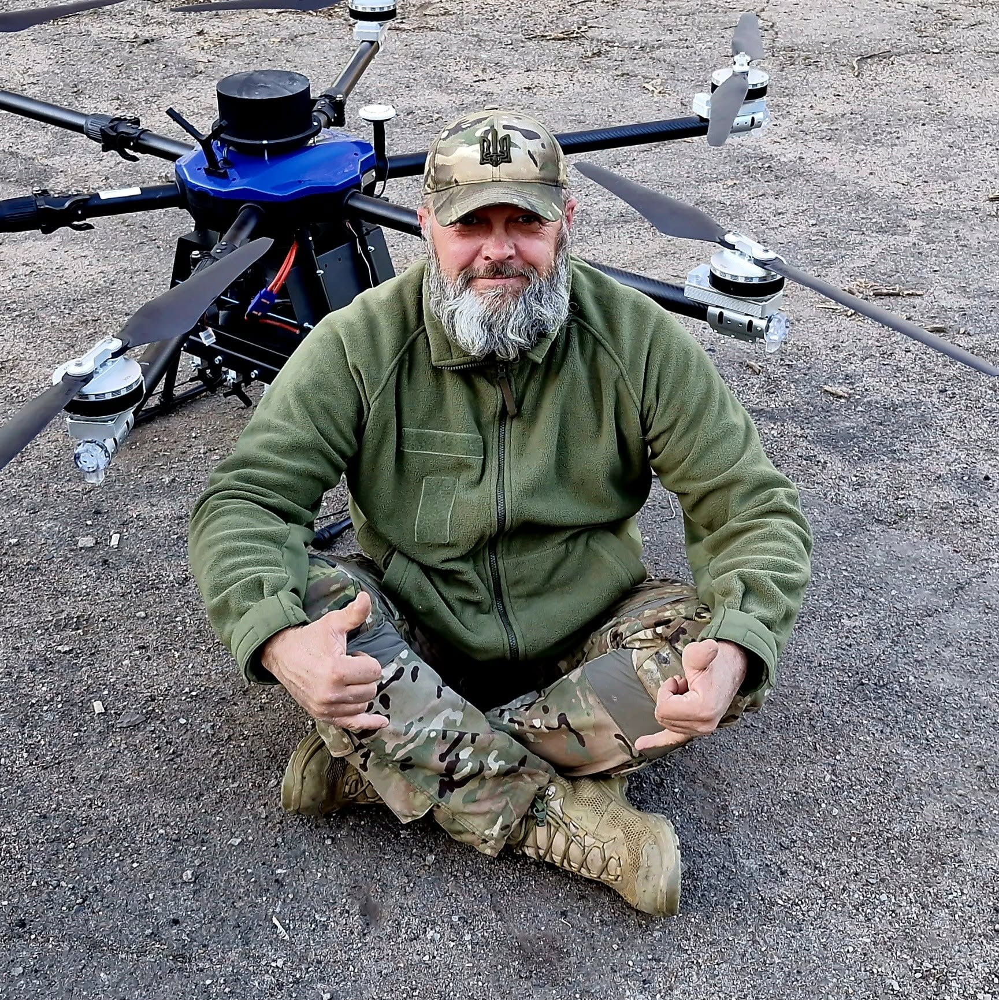

Нестор Воля
Доказовий аналіз відкритих джерел, підготовка аналітичних матеріалів, робота з публічними джерелами, графи знань та AI-інструменти для досліджень.

Основні напрями
OSINT і перевірка джерел
Пошук, звірка, архівація та аналіз відкритих джерел: медіа, реєстри, домени, веб-архіви, соціальні сигнали.
Інформаційні операції
Аналіз наративів, медійних слідів, публічної присутності, мереж поширення та контексту комунікацій.
AI/OSINT-автоматизація
Технічні пайплайни для збору, структурування, витягу сутностей, виявлення суперечностей і підготовки звітів.
Практична цінність
- Швидко розгорнути evidence-based OSINT-профіль по особі, організації або мережі.
- Підготувати аналітичний звіт, інформаційну довідку або візуалізацію для командира / аналітичного відділу.
- Виявляти закономірності координації та мережеві зв'язки у масивах публічних даних.
- Побудувати повторюваний процес збору, перевірки, архівації й звітності.
- Автоматизувати OSINT / document-analysis задачі через Python, API, бази даних і LLM.
- Не підміняти факти враженнями: розділяти джерело, припущення, висновок і прогалину.
Практичний стек
- OSINT: Wayback Machine, WHOIS/DNS, BuiltWith, urlscan, Google operators, source registry.
- Data / AI: Python, FastAPI, PostgreSQL, pgvector, SQLite, JSON Schema, RAG, NER, Gemini, Claude, NotebookLM, Perplexity, LLM Guard, agentic workflows.
- Automation: Playwright, Crawl4AI, Jina, Exa, Tavily, n8n (agentic workflows), API pipelines, browser automation.
- Graphs: Gephi, Neo4j, NetworkX, pyvis, PageRank, modularity, weighted degree.
- Runtime / VPS: Docker, VPS Linux server (nginx, Traefik, Let's Encrypt, reverse proxy, SSL/TLS), Ubuntu/Linux, Git/GitHub.
Вибрані публічні підтвердження
HARON / tck-bot — система підтримки рішень
Solo-продукт · deployed · 2025–2026
Повний цикл від Signal-запиту до рішення адміну: PDF → AI-аналіз → висновок. Python / FastAPI / PostgreSQL / Docker.
Rentafont — OSINT-розслідування
Опубліковане дослідження · dev.ua / DOU
Публічна історія, інфраструктура, партнерська мережа та зв'язки з російським ринком; технічний і відкритий аналіз.
dev.ua · DOU · Повний кейс →
Russia Cristiana / Braschi — мережа впливу РФ
Актор-профілювання · мережа впливу РФ · Італія–Москва–Україна · 2026
OSINT-розслідування м'якої сили РФ: Francesco Braschi / Russia Cristiana як transnational influence network.
Чекаль Олексій — actor profiling
Actor profiling · ручний еталон + pipeline benchmark · 2025–2026
Каліграф, автор графічного стилю ПЦУ — і системна присутність у проросійській медіасфері.
AI для OSINT і розвідки
robot_dreams · 09.04–25.06.2026 · завершено, ТОП-3 рейтингу курсу
Курсове навчання та проєктні артефакти застосування AI в OSINT-аналізі. Диплом виданий, 197 балів.
Курси прес-офіцерів ЗСУ
ВІКНУ · Військовий інститут КНУ ім. Тараса Шевченка · 30.09–14.10.2024
Курс підвищення кваліфікації з питань інформування громадськості та взаємодії з медіа.